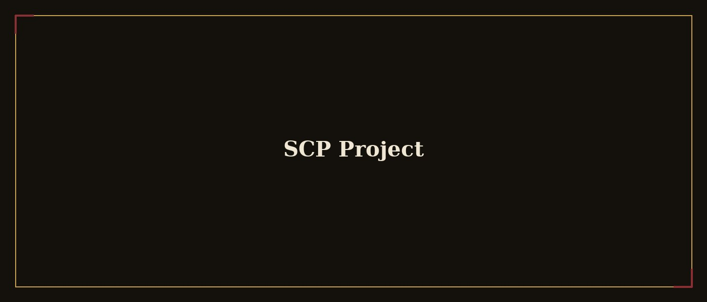

← Back to Narrative Design

SCP Project (Twine)
Branching interactive fiction across seven episodes, with four distinct endings.
The concept
A project built as a technical proof of branching writing: seven SCP-inspired episodes, linked by variables that track the player's choices across the whole run, leading to four different endings.
My role
I wrote the entire narrative structure and implemented the variable logic in Twine, balancing freedom of choice against the coherence of the central mystery.
- Wrote seven branching episodes
- Designed the variables that shape each ending
- Four distinct endings based on player choice
The hardest part wasn't writing the forks — it was making every ending feel like a logical consequence, not a label stuck on at the finish.
Gallery — screenshots & gifs
A Twine node (screenshot)
Variable map (screenshot)
One of the four endings (screenshot)
Branching structure overview (screenshot)